Poussin dans son oeuf
Ce pliage de poussin peut être préparé pour une décoration de printemps, de Pâques!
Préparer 2 carrés de papier 15 x 15 ou 20 x 20 cm de couleur différente. Coller les 2 carrés de papier dos à dos
Marquer une des diagonales pour cela plier en 2 le carré pour obtenir un triangle et ouvrir. Positionner le carré de papier de façon à ce que le pli soit à la verticale.
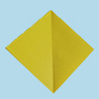
Relever la pointe du bas et amener la pointe au 3/4 du pli de la diagonale. Appuyer pour plier.
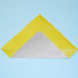
Plier le coté droit et le coté gauche en amenant la pointe de chaque angle gauche et droit au centre du travail, au niveau du pli vertical. Retourner le travail
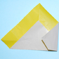
Plier le coté droit en amenant la pointe de l'angle et le coté supérieur le long du pli central vertical. Cela forme un triangle dont l'angle du bas est à environ 0,5 cm du bas du travail. Faire le même pli à gauche
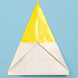
Plier chacun des 2 triangles droit et gauche en ramenant leur sommet se situant au centre du travail vers les bords droit et gauche.
Aligner le coté inférieur des triangles avec les bords du travail
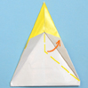
Déplier légèrement le dernier pliage et passer un doigt à l'intérieur des triangles gauche et droit pour étirer le pliage et former des triangles plus grand qui dépassent à droite et à gauche.
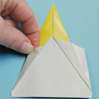
Plier vers l'intérieur les 2 coins en bas du travail pour l'arrondir un peu. Rabattre la pointe du sommet de moitié, en alignant son coté droit avec le coté du triangle à gauche élargi précédement.
Plier de nouveau la pointe en la relevant vers le haut et en la laissant dépasser à gauche du travail.
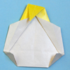 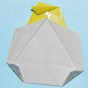
Retourner le travail , il ne reste plus qu'à dessiner l'oeil du profil droit du poussin.
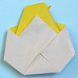 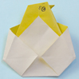
Le poussin est prêt à sortir de son oeuf!
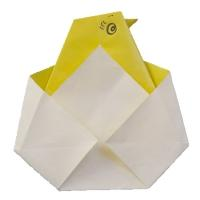
1 Commentaire
Laisser un commentaire